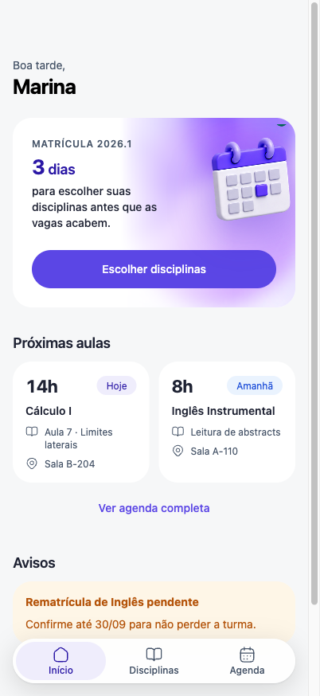
Como um design system transformou uma matrícula apressada, no celular, numa interface que ela entende de primeira.
Não tem computador em casa. Precisa comparar disciplinas e horários depressa, com o polegar.
Por demorar a decidir. Ela não quer que aconteça de novo.
Tudo o que importa precisa caber numa coluna.
Perder a vaga enquanto decide. Errar e não conseguir voltar.
Telas, componentes e tokens existem para tirar atrito desse caminho.
Do wireframe à UI: grid, tipografia, cor e hierarquia.
Componentes, estados, movimento, navegação e acessibilidade.
Heurística com IA, decisão humana e prioridade.
Design system, tokens e especificação para construir.
O selo no canto de cada slide diz qual critério da avaliação ele demonstra.
Oposto plausível: mostrar vagas só no resumo, para ter menos ruído.
Vence porque Marina teme perder a vaga enquanto decide.
Oposto plausível: a seleção avança direto, sem retorno.
Vence porque com pressa e medo de errar, poder voltar é o que permite comparar.
Oposto plausível: professor e horário só no detalhe, cartões menores.
Vence porque comparar na lista poupa navegação.
Marina tem 402 pixels e pressa. Cada pixel precisa trabalhar.
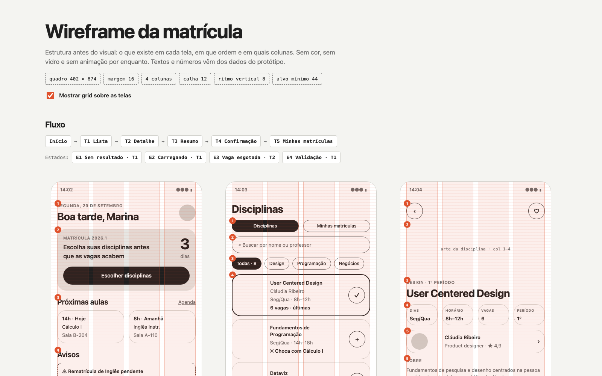
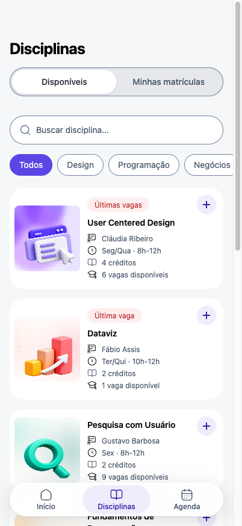
T1 final
Quadro 402 × 874 · margem 16 · calha 12 · alvo mínimo 44 · fluxo e estados mapeados ainda em cinza.
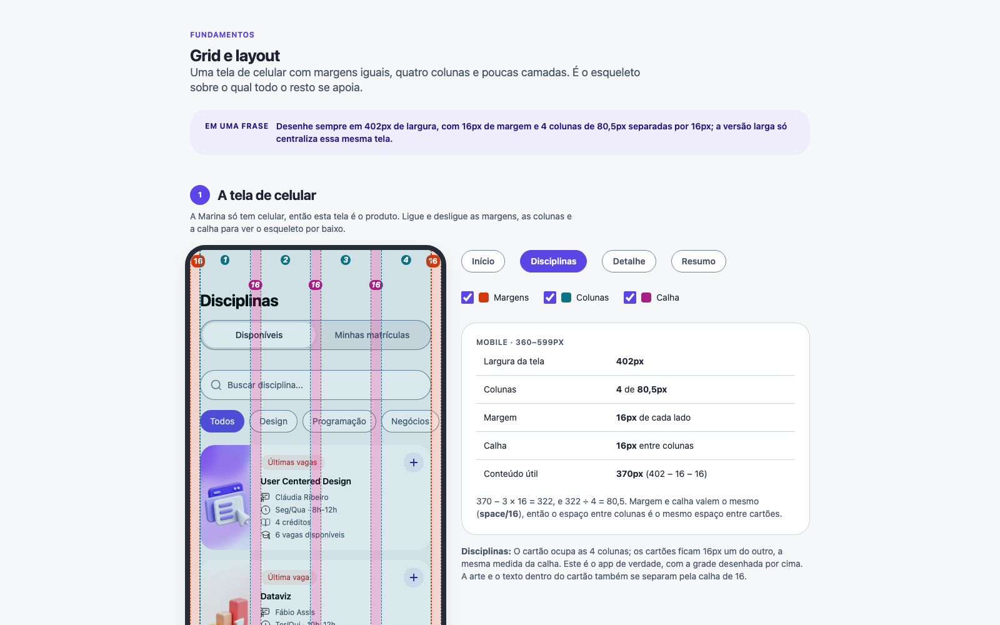
Arte do cartão vai de 1/3 para 1/4 da largura
Coluna centraliza, com cantos e sombra
Quebrar em 360px e 600px, nunca pelo nome de um aparelho.
Abaixo de 360px o texto do cartão cai para menos de ~25 caracteres por linha. Acima de 600px a coluna de 402px (~60 caracteres, o limite de leitura confortável) já não ocupa a tela.
A quebra de 380px do primeiro rascunho (nunca implementada) e um layout de várias colunas: Marina só tem celular.
Auditado no navegador: nenhum espaço da tela fica fora da lista.
Só 4 · 8 · 12 · 16 · 24 · 32 · 48 · 64, e uma regra de uso por valor.
Sem regra, dois designers escolhem valores diferentes para o mesmo caso. Com ela, o espaço diz o parentesco: quanto mais perto, mais relacionado.
O space/40 do Figma (fora da escala) e os 72, 96 e 200px soltos, que viraram 64, 48 e 3 × 64.
Amostras ampliadas 2×. Fonte do sistema (SF no iPhone): zero download, leitura nativa. Nada herda os 16px do navegador.
Rótulo de botão no corpo de 14; o roxo cheio marca a única ação principal da tela.
Com o botão em 18, ele ficava maior que o texto que rotula. A referência faz igual: Material 3 labelLarge 14/20 e Ant Design com base 14.
Os 9 tamanhos do Figma (13, 16, 20, 24, 28, 56…), o 56px como sexto degrau e um degrau extra de 16.
color/text/secondary aponta para gray/600; gray/500 fica só na borda de controle.
Texto de 14px exige 4,5:1 e componente exige 3:1. O gray/500 do Figma passa no segundo (3,61) e reprova no primeiro. Trocar o alias resolve sem tocar nos primitivos.
Manter o alias do Figma (texto ilegível) ou criar um cinza novo, que aumentaria a paleta sem necessidade.
Por quê o 8: o bloco de 2h da agenda tem 32px de altura. Com 16 de raio, virava pílula.
Descartado: usar 8 só na agenda, que daria 4 raios, acima do limite de 3.
Por quê: sombra diz “isto está acima e pode cobrir conteúdo”. Cartão plano não compete com a barra que flutua.
Token: shadow/float = 0 8 32 preto 14%.
Por quê: 86% é o mínimo que mantém 4,5:1 com conteúdo escuro passando por baixo.
Descartado: os 72% do padrão do iOS, reprovados na medição.
Vidro só nas barras que flutuam (topo, tab bar, acessório de seleção). Com “reduzir transparência” ligado, elas viram superfície sólida.
Cartão, chips, barra flutuante de vidro e tab bar se repetem. Cada tela ajusta só o que o contexto pede: a T3 fixa um resumo alto, a T4 tira a tab bar para celebrar.
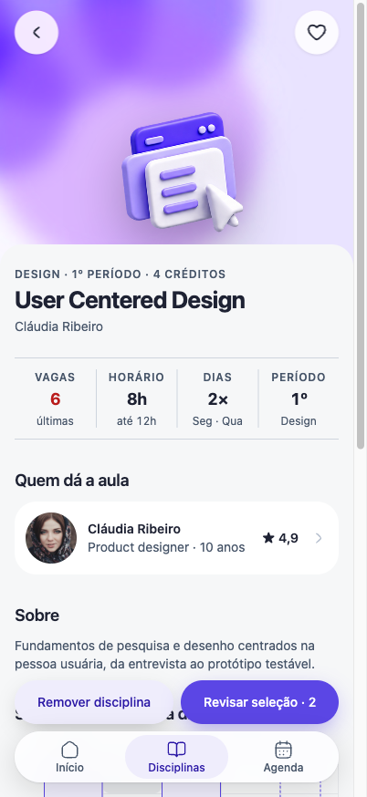
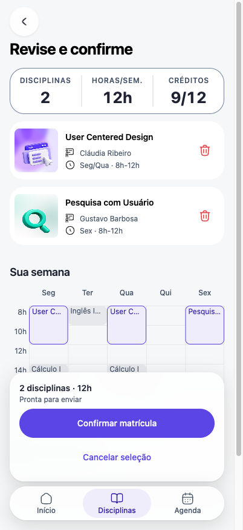
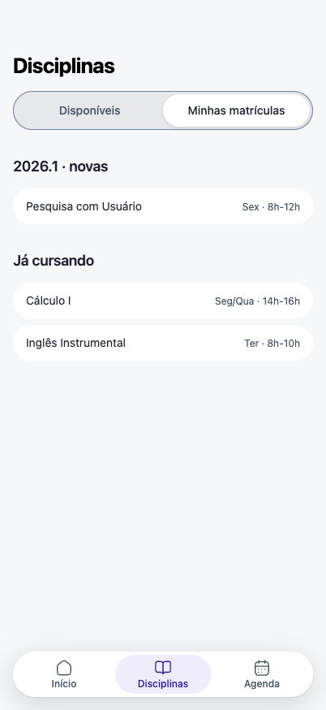
Um protótipo em React, navegável de ponta a ponta, construído com as mesmas peças do design system.
Ampliado 2×. Toque no + para ver o estado selecionado com a mola de 240ms.
Um + redondo de 48px no cartão, ao lado de um segundo botão que cobre o cartão e abre o detalhe.
Selecionar sem sair da lista. Dois botões irmãos, sem aninhar, e cada um tem nome próprio para leitor de tela (aria-pressed no +).
Caixa de seleção (sugestão IA-13, recusada: o + é mais reconhecível) e cartão sem ação, só com seleção no detalhe.
Dataviz sai da sua matrícula e volta para a lista de disciplinas. Você pode escolher ela de novo depois.
O anel roxo marca onde o foco começa: na ação segura.
Remover, descartar, vaga esgotada e perfil do professor usam o mesmo BottomSheet: sobe de baixo, sem ×, ação principal em cima.
No celular a ação fica ao alcance do polegar. A lógica de abrir, fechar e devolver o foco estava repetida em 4 lugares; virou uma peça só, com página no Storybook.
Diálogo centrado e repetir o CSS do perfil em cada caso.
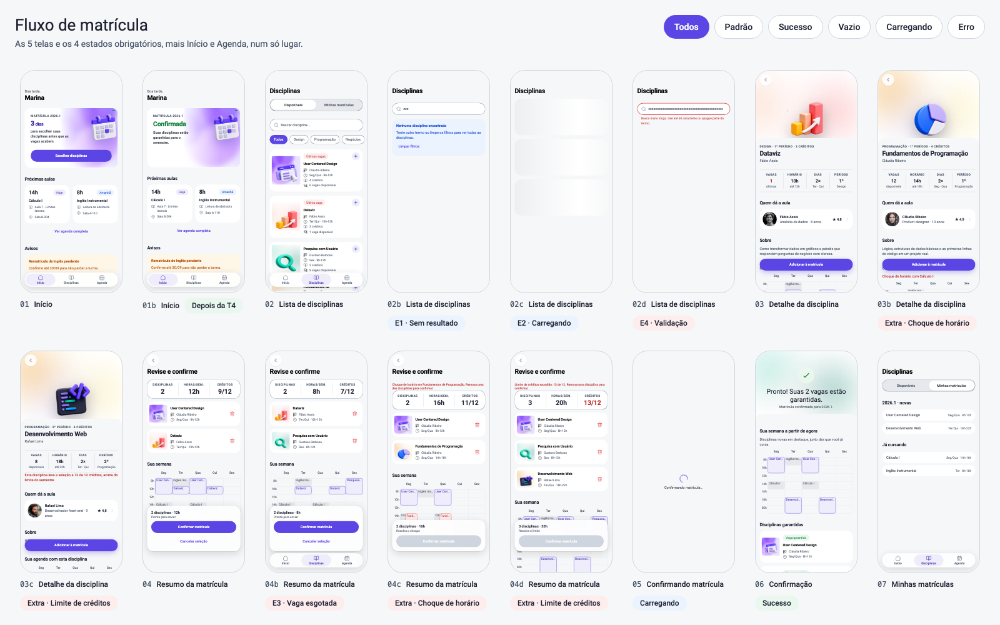
Diz o que fazer: “Limpar filtros”.
Esqueleto no formato do cartão.
Aviso com saída, nada perdido.
“Use até 60 caracteres.”
E ainda: choque de horário e limite de créditos.
Outra pessoa leva a última vaga de Dataviz enquanto Marina decide. Nada é confirmado, nada é perdido, e a tela diz exatamente o que fazer.
O que aconteceu: “A vaga de Dataviz acabou.”
O que não mudou: “Sua matrícula ainda não foi confirmada.”
O que fazer: “Remover Dataviz” ou “Fechar”.
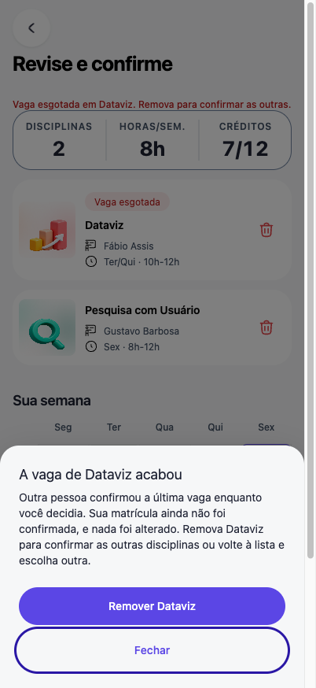
A mola só aparece quando algo foi confirmado (adicionar, ✓). Navegar usa a curva padrão.
Movimento é informação: deslizar diz “mudei de tela”, saltar diz “deu certo”. Se tudo saltasse, nada comunicaria sucesso. Com “reduzir movimento”, as durações zeram e os laços rodam uma vez só (IA-08).
A animação decorativa de flutuar e o laço infinito do esqueleto com movimento reduzido ligado, que faria piscar.
preserva a seleção
descarta, depois de perguntar
reverte a última ação
não altera nada
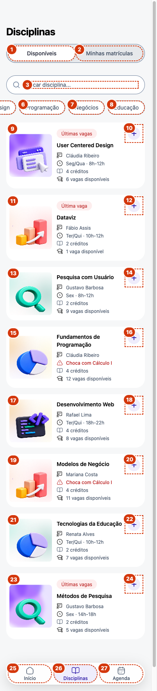
27 paradas de foco numeradas na T1. Toda sobreposição fecha com Esc e devolve o foco. Contraste medido e axe-core em todas as telas.
Alvos de 48px
Contraste ≥ 4,5:1
Nunca só a cor
Foco roxo de 3px
Erro diz o que fazer
Avaliação heurística com Claude Code e axe-core 4.10.2. Nenhum achado entrou no produto sem uma decisão humana.
1. Onde está
2. O que a IA viu
3. Heurística ou critério WCAG
4. Por que é problema para Marina
5. Severidade (frequência, impacto, persistência)
6. Correção sugerida
7. Decisão do estudante e motivo
Texto branco sobre o vermelho antigo. O fundo passou a usar o token de texto de erro.
Busca, chips e seletor ganham um token novo de borda de controle.
Telas sem <main> segundo o axe (T2, T3 e T4), justamente o caminho da matrícula.
Razões de contraste calculadas pela fórmula de luminância WCAG; estrutura conferida pelo axe-core e pela árvore de acessibilidade.
aceitos
contraste, estrutura, rótulos, títulos de tela
recusados, com motivo
2 ainda a registrar
“Trocar o + por caixa de seleção?” Não: é altamente reconhecível que o + é para adicionar.
IA-13, recusado. IA-16 também: chips de 36px “dentro dos padrões aceitáveis” (mínimo AA é 24).
A IA deu severidade 1 a confirmar sem “tem certeza?”. Eu dei 4.
IA-14: é a ação que gasta a vaga. Virou a folha “Confirmar matrícula?”.
Limite das duas análises: nenhuma usou o app com pressa. O teste com uma pessoa real (roteiro de 3 tarefas pronto) e o leitor de tela no iPhone ainda estão pendentes.
| Minha sev. | Achado | O que muda para Marina | Resultado |
|---|---|---|---|
| 4 | IA-02 | Leitor de tela pula direto para o conteúdo em T2, T3 e T4 | Aplicado |
| 4 | IA-14 | Confirmar a matrícula pergunta uma vez antes de gastar a vaga | Aplicado |
| 3 | IA-01 | Botão de remover legível (3,91 → 6,47:1) | Aplicado |
| 3 | IA-22 | Nome da aula não se parte no meio na agenda | Aplicado |
| 2 | IA-03 · 05 · 06 | Título por tela, botões com verbo + objeto, contorno 3:1 | Aplicados |
| – | 9 achados | Opinião sem impacto de uso, ou já corrigidos | Recusados, com motivo |
Critério: o que impede ou arrisca a matrícula vem antes do que só incomoda. Severidade, decisão e motivo ficam registrados em docs/avaliacao-heuristica-exportada.md.
O design system é o contrato entre o Figma, o código e quem vem depois.
Fundamentos · 8 guias visuais: grid, espaço, tipografia, cor, raios, movimento, camadas
Átomos → Moléculas → Organismos · cada um com variantes e estados
Projeto/Protótipo · as telas e estados reais, lado a lado
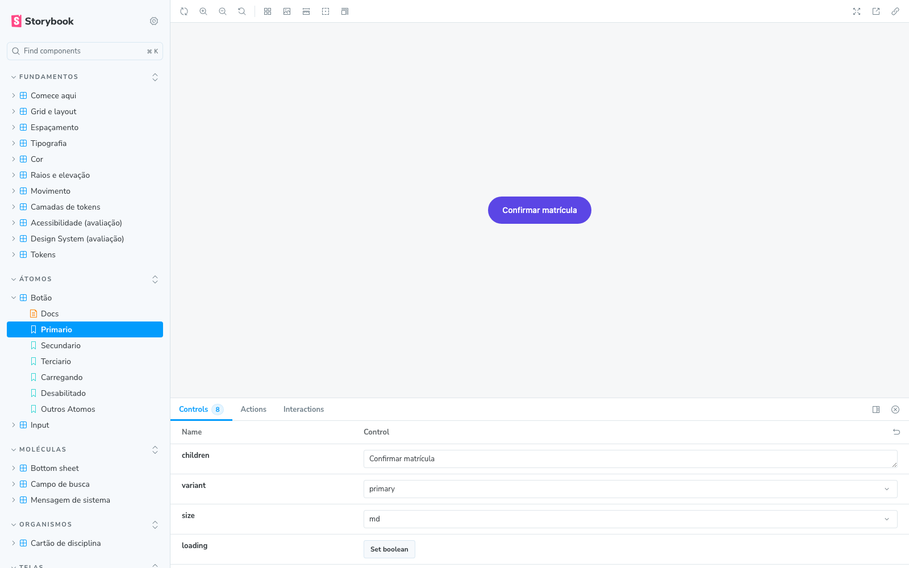
| Nome | Valor | Camada | Razão |
|---|---|---|---|
| color/purple/500 | #5b46e5 | Primitiva | Marca e ação |
| color/gray/600 | #475569 | Primitiva | Texto secundário legível |
| space/48 | 48px | Primitiva | Fim de bloco grande; o Figma só tinha 40 |
| color/text/secondary | gray/600 | Semântica | 7,06:1; ajuste do Figma |
| color/feedback/error/bg | red/50 | Semântica | Erro sem depender só da cor |
| material/glass | white 86% + blur 24 | Semântica | Mínimo que mantém 4,5:1 |
| radius/card | radius/xl | Componente | Cartão e folha a 24px |
| radius/inner | radius/sm | Componente | Arte, agenda e caixa a 8px |
Hex só na base. Troque o primitivo e tudo que depende dele muda junto; troque o semântico e só o papel muda. Poucos de componente: uma pirâmide invertida seria uma lista de exceções.
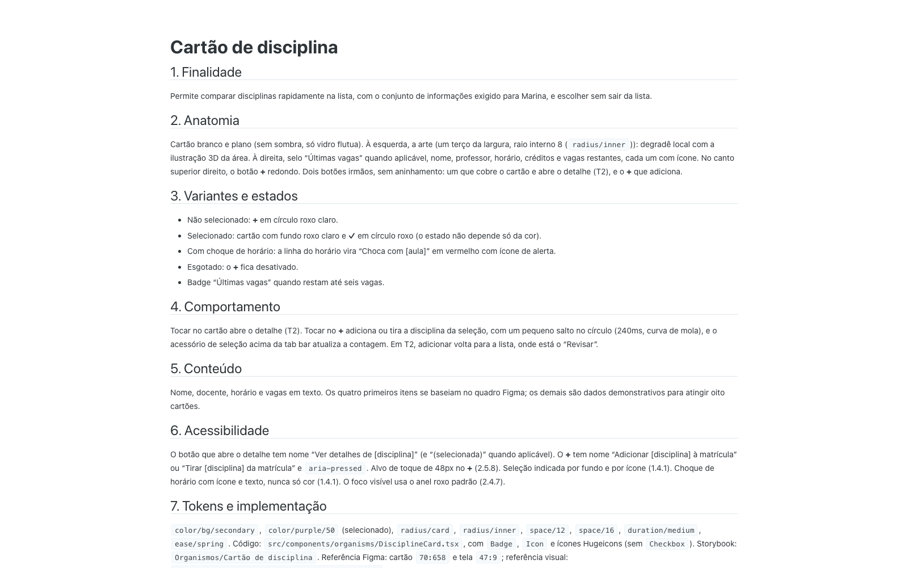
Botão, campo de busca, cartão de disciplina e mensagem de sistema. O mesmo arquivo alimenta o repositório e a aba Docs: não existe cópia para desatualizar.
115 variáveis do Figma numa fonte única; o tema do Tailwind espelha os mesmos valores.
src/styles/figma-tokens.css · .json4 páginas em 7 seções, ligadas à aba Docs; cada variante e estado é uma história no Storybook.
docs/componentes/*.md5 telas e 4 estados ligados, o que cada saída faz e qual duração cada transição usa.
Storybook · Projeto/Protótipo30 decisões com motivo e alternativa descartada; pendências com impacto e próxima ação.
docs/decisoes.md · docs/handoff.mdAssets locais (ilustrações 3D, fotos e ícones), nenhuma URL temporária do Figma. Build offline para abrir sem instalar nada.
Um sistema que decide pelos mesmos motivos em cada pixel. Próximo passo: o teste com uma pessoa real, no celular, sem explicação.
Obrigado